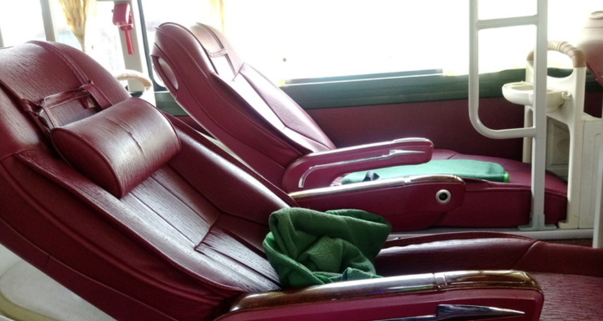

越南避暑勝地Da Lat

大叻市（Thành phốĐàLạt）是越南林同省省會，位於中部林園高原，平均氣溫約為17℃，最熱的季節不超過25℃。大叻市在阮朝時仍處於部落統治時代。該地被稱作Lang Bian高原（另有Langbiang多種拼寫方式），後越南語化為林園高原，又稱作大叻高原，是西原高原的組成部分。1893年，著名的細菌學家 亞歷山大 · 耶爾 森來到林園高原探險。1897年，耶爾森請求法屬印度支那總督保羅在這裡興建高山避暑勝地。這一建議得到了總督的認可。此後，法國殖民政府逐漸開發大叻。 法國人離開後在大叻留下了很多歐式的建築，花園，教堂隨處可見，著名的春香湖也是法國人開鑿出來的人工湖。
位於越南中部高原南部是一個充滿歐式風情的小城市氣候宜人，盛產蔬果及花卉，相傳是古代越南國王的避暑勝地，現在是越南的旅遊熱點，因為大叻市不大，適合安排一日遊~
5月到10月的大叻是雨季，如果你真的不喜歡下雨，最好避開這幾個月。每年1月1日到4日大叻會舉辦花展，這時候是大叻最美麗的時刻。因此大叻旅行的最佳時間是從10月到第二年的4月份，尤其是1月到3月春暖花開的時節。大叻白天與晚上溫差較大，如果遇到下雨則很涼，白天25°C的天晚上隨時可以降到10°C左右，因此如果你打算去大叻呆上幾天，一定記得備多一件薄外套。最後需要提醒大家的是，9月2日是 越南 的國慶日，越南會有個三天的小假期，屆時 越南 國內會有非常多的當地人去大叻度假，酒店價格上漲不說，還基本爆滿。所以建議國內的朋友最好避開這個時間去大叻 。
(此圖為當地著名Flower Park)
大叻機場目前班機不多，機場本身也沒有太多周邊服務，最明確的就是機場到市區的交通服務台，所以班機抵達後下飛機一走入航站就可看到一個服務台，分左右二邊，一邊是機場巴士、一邊是計程車服務；
從越南胡志明市到「大叻」除了坐飛機，大多數民眾會選擇搭乘長途巴士，然而平均約7至8小時的車程，讓旅客光是交通就花上一整天的時間，其實，來往胡志明市與「大叻」巴士班次相當密集，大家不妨選擇夜間時段的「通宵巴士」！
臥鋪還算舒服，身高１７０腳都還能伸直，下鋪明顯比上鋪穩，睡上鋪太可怕了~畢竟前往大叻多為山路，因此路會較顛簸，司機駕駛上真的非常看技術，我去程是傍晚時間，車量非常多，司機沿路狂按喇叭，一路狂飆，也許不想誤點吧~這整個路途上，都會有停靠點，載其他旅客，陸陸續續都會有遊客上來。司機根本就是用高速公路的時速來開九彎十八拐的道路集山路。相當可怕，整晚都睡不好，司機一下左彎，一下右彎，提心吊膽的夜晚。
上車後會每人發一瓶水和濕紙巾，還有鞋套，拖完鞋才能進巴士，每車也都有一位的隨車人員，至少能確保司機在路途中的精神狀況，不至於打瞌睡！中途會有休息站讓大家吃飯，下車不用麻煩還要再穿鞋子，隨車人員會提供拖鞋讓大家穿下去。中途休息站的售價都會比一般市區貴。
抵達大叻大概是凌晨三四點，司機停在郊區，相當的冷，他們會安排九人座的車子載大家去各自的旅店。
(上圖為清晨六點拍的美景，只能先放行李，中間這段時間一路在安靜的大叻街頭徘徊著)
大叻市場算是大叻的市中心，其周邊是背包客集中地，合宿型(Hostel)、以民宿為主，價格都不高；特色是便利：新咖啡巴士營運點在附近、可以租機車、可以逛街、夜晚有咖啡廳、小酒吧；如果你喜歡採Walk in的方式可以在這裡慢慢選擇。
這其實是間飯店，約有10間房，白天與夜晚有著不同的氣氛！白天是新奇探索；晚上則是陰森詭異 瘋狂屋被評為『世界十大怪奇建築』，有多特別呢? 讓你穿梭在這迷宮般的建築讓人找不到路，重點處處都是驚喜呢！ 順著藤蔓階梯越爬越高，還能俯瞰瘋狂屋呢！不要覺得這只是一個建築能有多厲害? 它確實就是一個非常用心及讓人驚艷難忘的景點，千萬不能錯過這裡！
瘋狂屋設計師NGA是 越南前總統TRUONG CHINH的女兒，瘋狂屋最初的設計功能是酒店，但因為其設計非常獨特，因此大多遊客都以為好奇而慕名前來參觀，基本上是沒人住店的。慢慢的形成了現在大叻最具代表的標誌性建築。
瘋狂屋也稱作恆娥別墅Hằng Nga guesthouse， 至今還在不斷的增建中，很有高地的天馬行空風格～
大叻站是越南大塔鐵路的一個火車站，服務於林同省大叻市。 它是由法國建築師Moncet和Reveron設計於1932年，並於1938年開業。 此後僅數年就由於戰爭而長期遭廢棄，直到1990年代， 才恢復了通往附近村莊Trai Mat的7公里長的旅遊線路。 大叻火車站擁有獨特的建築風格，整體而言為裝飾藝術風格， 和法國的特魯維勒-多維勒站風格相似， 同時又結合了本土的越南中部高地的建築元素。

大叻火車站是大叻的標誌性建築之一。鐵路線總長8公里，目前僅作為觀光客服務，經過大叻山區，到達山間的一個小村落參觀靈福寶塔，每天往返五班。觀光火車價格外國遊客價格為124.000VND/人，車站參觀費用為5.000VND/人

春香湖是越南大叻市中心的一座人工湖，開挖於20世紀的法國殖民時代，湖面面積有5平方公里，非常的廣闊 在湖的另一個是純樸又繁榮的市區，另一側則是寧靜悠閒的自然景色，兩側不同風情的景象，讓坐在湖畔草皮上的我們享受其中
香湖的名稱有兩種說法：一是在春天，湖四周的花草樹木散發出香味，所以稱為春香湖。另一說是以19世紀越南女詩人胡春香命名，是從1953年命名之，旨在重現這位浪漫詩人的形象，貼合此處的景色。
來到大叻市區春香湖畔旁的Da Lat Lam Vien Square上，都會看見這兩座醒目的建築在廣場下面是Big C大型購物中心和一個小商場，許多居民和遊客都喜歡聚集在廣場上拍照 看著這個碩大的黃綠交錯造型建築，像是菠蘿麵包！
非常舒服的天氣，令人想待上一整個下午，看著小孩嬉戲，聽那不遠處傳來的歌聲，聞著小餐車的麵包香
大叻的郊區最遠就是到這個「大象瀑布」thac vol，路上沒有路標，也不是很好找，所以只看到一些外國摩托車跟本地人來到這，門票VND.1萬，雖然不是磅礴的大瀑布，但人煙稀少，在瀑布底下坐著吸收負離子，一股沁涼通體舒暢，清爽無比，但進去瀑布的路不是很好走就是了
大象瀑布是越南中部最大的瀑布，它高三十多米，寬四十米，水量充沛。那裡非常美麗，而且氣候濕潤陰涼。由於其位置偏遠，它的環境十分安靜清幽，遊人稀少。


酒莊腹地是環繞著湖泊，淺灘處如果整理好一定很美。同樣打造花卉及拍照景點為主，目前是藍色小精靈和101忠狗。
最厲害的應該是酒窖，盡頭處放了二個橡木桶及許多乾淨的高腳杯，竟然是可以自己扭開水龍頭裝紅酒，兩位朋友喝了說有巧克力味，口感不酸不澀，後才才知道是「火龍果酒」，有機會可以來走走。


位於越南中部高山地區的大叻(Da Lat)，因歷史因素擁有許多浪漫法式建築，有「越版小巴黎」之稱，來到這一定會去的賞景地點Sunny Farm，現在在一旁多了一座超夢幻純白階梯「Stairway To Heaven」（天國的階梯），無限延伸的錯覺感，讓人就像在仙境般，特別有夢幻感。


Tunnel Clay泥雕公園是大叻知名的景點之一，離市區稍遠些，大概需要40分鐘左右的車程，票價為全票60000VND(130公分以上)、半票30000VND(110-130公分)、免費(未滿110公分)。原因不外乎是以個人之力要打造整個Tunnel Clay需要耗費許多的時間及毅力，更何況是要將很不花俏的泥土表現出特色，想必相當困難。
整個園區充滿著用泥土所創作的裝置藝術，從許多的造型中可以發現很多設計都滿具有巧思的，其中最著名的創作就是在園區的尾端處有兩個大大的人像後面還長滿著植物，有種腦力激盪的感覺。


浪平山（Lang Bian Mountain）距離大叻市區僅12公里，這裡有著宜人的氣候，動植物資源十分豐富，可選擇乘坐吉普車或徒步前往山頂。沿途的原生態風光讓人心曠神怡，山頂的景色更為壯觀，可以將城市風光僅收眼底。
上山搭乘吉普車，有專門櫃檯賣門票，當時是包車，一個人的車票是60K（來回兩趟），上路滿陡的，可以搭車，也可以徒步(約三小時)。山上也有咖啡廳跟賣熱食的，唯一缺點就是好冷，非常舒服的天氣，可以感受到大叻一天下來似乎，擁有著春夏秋冬的氣候，真是令人想待整個下午，發呆吹風。


.png)